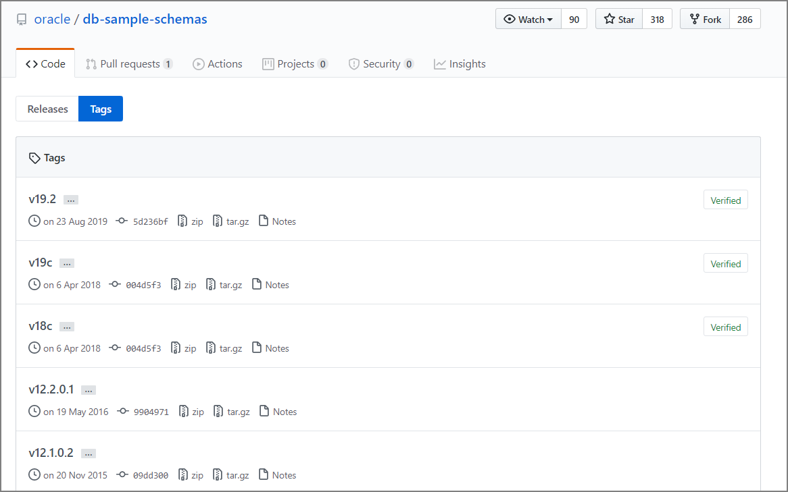

Oracle Database 12.1.0.2にサンプルスキーマを手動インストール、手動作成する
はじめに
やりたいことは表題の通り。検証作業をする時、自分で作るテスト用のテーブルだけではなくて、制約やトリガー、ビュー、本番相当（っぽい）データが入っているスキーマが欲しいなと思うことがよくある。Oracleのサンプル・スキーマのインストールはDBCA実行時に指定出来るが、チェック入れてないケースが多々
DBCA実行時にサンプル・スキーマのインストールを設定しておらず、後からサンプル・スキーマを作る方法をこちらに記載。今回は12.1.0.2で実行しましたが、おそらく12cR1以降であれば作成用スクリプトが用意されているので同じ手順で実行可能かと。
12.1.0.2用のスクリプトはこちら。
Release Oracle Database 12.1.0.2 Sample Schemas · oracle/db-sample-schemas · GitHub https://github.com/oracle/db-sample-schemas/releases/tag/v12.1.0.2
手順はこちら。
GitHub-oracle / db-sample-schemas：Oracle Databaseサンプルスキーマ https://github.com/oracle/db-sample-schemas
なお、本日時点で12cR1～19c用のサンプルスキーマ作成用スクリプトがある。

事前準備
GitHubのソースコードをダウンロードして所定のディレクトリに配置する
12.1.0.2用のスクリプトはこちら。
Release Oracle Database 12.1.0.2 Sample Schemas · oracle/db-sample-schemas · GitHub https://github.com/oracle/db-sample-schemas/releases/tag/v12.1.0.2
db-sample-schemas-12.1.0.2.zipを$ORACLE_HOME/demo/schemaに展開。
unzip -q db-sample-schemas-12.1.0.2.zip -d /u01/app/oracle/product/12.1.0.2/dbhome_1/demo
cd /u01/app/oracle/product/12.1.0.2/dbhome_1/demo/db-sample-schemas-12.1.0.2
ls -l
[oracle@dbsrvec2 db-sample-schemas-12.1.0.2]$ ll
合計 100
-rw-r--r-- 1 oracle oinstall 117 11月 8 2015 CONTRIBUTING.md
-rw-r--r-- 1 oracle oinstall 1050 11月 8 2015 LICENSE.md
-rw-r--r-- 1 oracle oinstall 4986 11月 8 2015 README.md
-rw-r--r-- 1 oracle oinstall 5263 11月 8 2015 README.txt
drwxr-xr-x 2 oracle oinstall 85 11月 8 2015 bus_intelligence
-rw-r--r-- 1 oracle oinstall 3633 11月 8 2015 drop_sch.sql
drwxr-xr-x 2 oracle oinstall 197 11月 8 2015 human_resources
drwxr-xr-x 2 oracle oinstall 79 11月 8 2015 info_exchange
-rw-r--r-- 1 oracle oinstall 2740 11月 8 2015 mk_dir.sql
-rw-r--r-- 1 oracle oinstall 28741 11月 8 2015 mkplug.sql
-rw-r--r-- 1 oracle oinstall 7081 11月 8 2015 mksample.sql
-rw-r--r-- 1 oracle oinstall 6592 11月 8 2015 mkunplug.sql
-rw-r--r-- 1 oracle oinstall 6123 11月 8 2015 mkverify.sql
drwxr-xr-x 3 oracle oinstall 4096 11月 8 2015 order_entry
drwxr-xr-x 2 oracle oinstall 4096 11月 8 2015 product_media
drwxr-xr-x 2 oracle oinstall 4096 11月 8 2015 sales_history
drwxr-xr-x 2 oracle oinstall 186 11月 8 2015 shipping
実行コマンド
スクリプトの一部修正
スクリプト内に埋め込んであるディレクトリを一部修正。ちなみにこのコマンド自体は↑の手順の中にある。
[oracle@dbsrvec2 schema]$
[oracle@dbsrvec2 schema]$ perl -p -i.bak -e 's#__SUB__CWD__#'$(pwd)'#g' *.sql */*.sql */*.dat
mksample.sqlの実行
- SYSTEM ユーザーのパスワード
- SYS ユーザーのパスワード
- HR ユーザーを作成し、設定する新しいパスワード
- OE ユーザーを作成し、設定する新しいパスワード
- PM ユーザーを作成し、設定する新しいパスワード
- IX ユーザーを作成し、設定する新しいパスワード
- SH ユーザーを作成し、設定する新しいパスワード
- BI ユーザーを作成し、設定する新しいパスワード
- デフォルト表領域 ※既に作成済みの表領域を指定。
- 一時表領域 ※既に作成済みの表領域を指定。
- ログの出力先フォルダ ※フルパスで入力し、最後に「\」を付加します。 （例：/u01/app/oracle/product/12.1.0.2/dbhome_1/demo/schema/log/mksample/）
- 接続記述子を指定
実際のmksample.sql実行例
SQL> @mksample.sql
[2019/11/12 13:04:11]
specify password for SYSTEM as parameter 1:
1に値を入力してください: oracle
[2019/11/12 13:04:13]
specify password for SYS as parameter 2:
2に値を入力してください: oracle
[2019/11/12 13:04:15]
specify password for HR as parameter 3:
3に値を入力してください: oracle
[2019/11/12 13:04:16]
specify password for OE as parameter 4:
4に値を入力してください: oracle
[2019/11/12 13:04:16]
specify password for PM as parameter 5:
5に値を入力してください: oracle
[2019/11/12 13:04:17]
specify password for IX as parameter 6:
6に値を入力してください: oracle
[2019/11/12 13:04:17]
specify password for SH as parameter 7:
7に値を入力してください: oracle
[2019/11/12 13:04:18]
specify password for BI as parameter 8:
8に値を入力してください: oracle
[2019/11/12 13:04:19]
specify default tablespace as parameter 9:
9に値を入力してください: USERS
[2019/11/12 13:04:24]
specify temporary tablespace as parameter 10:
10に値を入力してください: TEMP
[2019/11/12 13:04:25]
specify log file directory (including trailing delimiter) as parameter 11:
11に値を入力してください: /u01/app/oracle/product/12.1.0.2/dbhome_1/demo/schema/log/mksample/
[2019/11/12 13:04:36]
specify connect string as parameter 12:
12に値を入力してください: db121s
Sample Schemas are being created ...
[2019/11/12 13:04:39]
接続されました。
DROP USER hr CASCADE
～～中略～～
SH PRODUCTS_PROD_CAT_IX 5 72
SH PRODUCTS_PROD_STATUS_BIX 1 1
SH PRODUCTS_PROD_SUBCAT_IX 21 72
SH PROMO_PK 503 503
SH SALES_CHANNEL_BIX 4 92
SH SALES_CUST_BIX 7059 35808
SH SALES_PROD_BIX 72 1074
SH SALES_PROMO_BIX 4 54
SH SALES_TIME_BIX 1460 1460
SH SUP_TEXT_IDX
SH TIMES_PK 1826 1826
72行が選択されました。
SQL>
SQL>
作成確認
set pages 2000 lin 2000
col owner for a10
col object_type for a20
col COUNT(object_type) 999,999
SELECT
owner,
object_type,
COUNT(object_type)
FROM
DBA_OBJECTS
WHERE
OWNER IN ('BI','SH','IX','PM','OE','HR')
GROUP BY
owner,
object_type
order by 1,2;
OWNER OBJECT_TYPE COUNT(OBJECT_TYPE)
---------- -------------------- ------------------
BI SYNONYM 8
HR INDEX 19
HR PROCEDURE 2
HR SEQUENCE 3
HR TABLE 7
HR TRIGGER 2
HR VIEW 1
IX EVALUATION CONTEXT 2
IX INDEX 17
IX LOB 3
IX QUEUE 4
IX RULE SET 4
IX SEQUENCE 2
IX TABLE 17
IX TYPE 1
IX VIEW 8
OE FUNCTION 1
OE INDEX 48
OE LOB 15
OE SEQUENCE 1
OE SYNONYM 6
OE TABLE 14
OE TRIGGER 4
OE TYPE 37
OE TYPE BODY 3
OE VIEW 13
PM INDEX 21
PM LOB 17
PM TABLE 3
PM TYPE 3
SH DIMENSION 5
SH INDEX 30
SH INDEX PARTITION 196
SH LOB 2
SH MATERIALIZED VIEW 2
SH TABLE 17
SH TABLE PARTITION 56
SH VIEW 1
38行が選択されました。
SQL>
Appendix
こちらの方法でも良さそうだがやっていない。
Oracle Database 12cのサンプルスキーマ(HR, SH, OE…)をインストール - Qiita https://qiita.com/hobata/items/0bed0d1b2ed0566d2740
参考マニュアル
サンプル・スキーマのインストール https://docs.oracle.com/cd/E82638_01/comsc/installing-sample-schemas.html#GUID-3800BD1C-E227-487E-ACD0-AD02BB03C03A
関連しているかもしれない記事
- EC2上のRHEL上にOracle Database 12cR1をインストールする場合の事前準備
- EC2上でruninstallerの実行エラー
- AWS EC2でX Window Systemをセットアップする
- EC2にOracle ClientをインストールしてRDS(Oracle)に接続する
- Oracle Database 19c Standard Edition 2のReal Application Clustersの非サポート